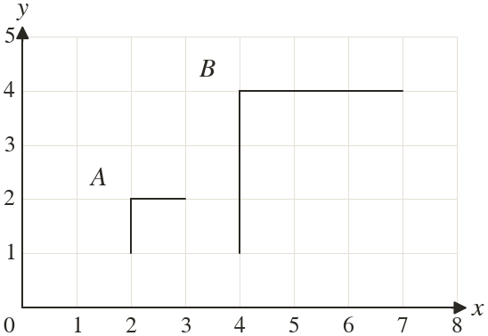

Westonbirt Maths · Transformations and Enlargements
Enlargement by a Positive Scale Factor
Name: ______________________ Date: ____________
1
Flag A has a stem of and its enlargement B a stem of
Find the scale factor.
Find the scale factor.
2
A triangle has sides and and its enlargement has shortest side
Find its other two sides.
Find its other two sides.
3
Under scale factor the point maps to Find the centre.
4
Under scale factor maps to Raj says the centre is the midpoint, Find his mistake and correct it.
5
Find the scale factor and the centre of the enlargement that maps flag A onto flag B.

Ext
An enlargement with scale factor maps to Another point maps to Find the centre and the other point.